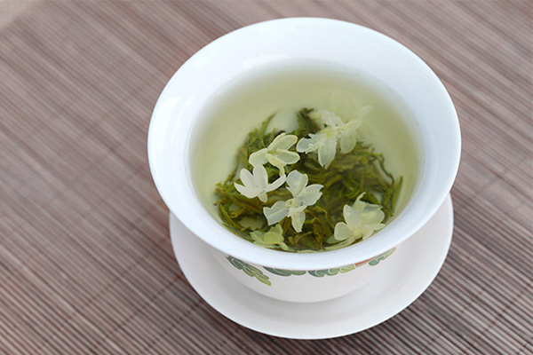

金华茉莉花茶 ，简称金华花茶，产于浙江省金华市，以精制茶用茉莉花窨制而成。已有三百多年生产历史。是我国当前销往国际市场花茶的主要产地之一。《香港经济导报》称赞金华茉莉花茶为“琼浆初举欲占口，茶兼花香更袭人。”
1

金华茉莉花茶以精制茶用茉莉花窨制而成，所以精华茉莉花茶它是有茉莉毛峰茶和茉莉烘青花茶以及茉莉炒金花茶这一些茶叶。已有三百多年生产历史。是我国当前销往国际市场花茶的主要产地之一。其品种有茉莉毛峰茶、茉莉烘青花茶（分1～6级）、茉莉炒青花茶（分为1～6级），以茉莉毛峰品质最佳。
2

茉莉花茶 "茉莉花茶是将茶叶和茉莉鲜花进行拼和、窨制，使茶叶吸收花香，茉莉花茶使用的茶叶称茶胚，多数以绿茶为多，少数也有红茶和乌龙茶。茉莉花茶因产地不同，其制作工艺与品质也不尽相同，各具特色。
3

花茶的窨制工艺 先将毛茶进行精制，为花茶的窨制提供优质茶坯。窨制前先烘干茶坯，使茶叶含水量降至4～5%，然后自然冷却至30～33℃，开始窨花。茶、花配比量依其品种、级别而定。花茶加工技术要求高，必须抓住鲜花吐香，茶坯吸香、复火保香3个重要环节，并须讲究窨制工艺过程中“干、凉、匀、快”的独特要求。
4